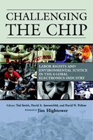

<body bgcolor="#FFFFFF" text="#000000" link="#0000FF" vlink="#CC0000" alink="#CC0000"><center><hr width="350" size="1" align="center" noshade>A revealing look at the dark side of the electronics industry and global efforts to move it toward greater sustainability and accountability<hr width="350" size="1" align="center" noshade><p><a href="https://cdcshoppingcart.uchicago.edu/Cart/ChicagoBook.aspx?ISBN=9781592133291&&PRESS=temple" target="_top">Buy this book!</a> | <a href="https://cdcshoppingcart.uchicago.edu/Cart/Cart.aspx?PRESS=temple" target="_top">View Cart</a> | <a href="https://cdcshoppingcart.uchicago.edu/Cart/Cart.aspx?PRESS=temple" target="_top">Check Out</a></p><p></p></center><!--none//--><h1>Challenging the Chip</h1>
<H2>Labor Rights and Environmental Justice in the Global Electronics Industry</H2>
<H2><!-- with Leslie A. Byster, Shenglin Chang, Amanda Hawes, Wen-ling Tu, and Andrew Watterson -->
<!-- Foreword by Jim Hightower --></H2>
<h3>edited by Ted Smith, David A. Sonnenfeld and David Naguib Pellow, foreword by Jim Hightower</h3>
<P>cloth 1-59213-329-0 $89.50, Jun 06, <FONT COLOR=#990033>Available</FONT>
<br>paper 1-59213-330-4 $31.95, Jun 06, <FONT COLOR=#990033>Available</FONT>
<br>Electronic Book 1-59213-331-2 $31.95 <FONT COLOR=#990033>Available</FONT>
<BR> 376 pp
6x9
22&nbsp;tables 3&nbsp;map(s) 6&nbsp;figures 37&nbsp;halftones
</P><BLOCKQUOTE><I>"</i>Challenging the Chip<i> is essential reading for anyone who owns a cell phone or computer. As its vividly written chapters reveal, our digital possessions connect us not only to global information but also to global contamination and injustice. Happily, this book shows us that we can have technology and clean water, too: Electronics sustainability is organic agriculture for iPods."</i>
<br>&#151<b>Sandra Steingraber</b>, Ph.D., author of <i>Living Downstream: An Ecologist Looks at Cancer and the Environment</i><i></I></BLOCKQUOTE>
<p>From Silicon Valley in California to Silicon Glen in Scotland, from Silicon Island in Taiwan to Silicon Paddy in China, the social, economic, and ecological effects of the international electronics industry are widespread. The production of electronic and computer components contaminates air, land, and water around the globe. As this eye-opening book reveals, the people who suffer the consequences are largely poor, female, immigrant, and minority. <i>Challenging the Chip</i> is the first comprehensive examination of the impacts of electronics manufacturing on workers and local environments across the planet.
<p>Contributors to this pioneering volume include many of the world's most articulate, passionate and progressive visionaries, scholars and advocates. Here they not only document the unsustainable and often devastating practices of the global electronics industry but also chronicle creative ways in which activists, government agencies, and others have attempted to reform the industry&#151through resistance, persuasion, and regulation.
<BR>&nbsp;<h2>Excerpt</h2><P>Excerpt available at <a href="http://www.temple.edu/tempress">www.temple.edu/tempress</a></p>
<BR>&nbsp;<h2>Reviews</h2>
<p><i>"This work is an impressive, comprehensive critique and hopeful, but realistic, blueprint for transforming the global electronics industry into a sustainable one encompassing technological advance, environmental improvement, and equitable, safe, and secure employment. A must-read for technologists, environmentalists, workers, and policy designers. The book promises to educate, persuade, and mobilize all stakeholders in the networks of mass production in electronics and to encourage advances in sustainable governance promoting environmental justice, the precautionary principle, and extended producer responsibility."</i>
<br>&#151<b>Nicholas A. Ashford</b>, MIT Professor of Technology and Policy, and co-author of <i>Technology, Globalization, and Sustainable Development</i>
<p><i>"Contrary to high tech's clean image, this pioneering work illustrates the industry's environmental and economic downsides from its birthplace of Silicon Valley to the four corners of the globe to which the industry recently has spread. Fortunately, at the same time that the industry has globalized, so too have social movements designed to improve economic and environmental justice. Told from the compelling and passionate perspective of workers and activists involved in these struggles, this compilation is a must-read for policy makers, students, and activists alike."</i>
<br>&#151<b>Jan Mazurek</b>, Department of Urban Planning, University of California at Los Angeles and author of <i>Making Microchips</i>
<p><i>"This is an excellent book. It is rare to see environment and labor issues brought together in a seamless fashion. Although I have heard about problems in the microelectronics industry before, nowhere have I seen such interesting reporting on the problems. This is
an important contribution to the discussion of globalization and its effects&#151and to the understanding of the grassroots movements that have emerged in response."</i>
<br>&#151<b>Charles Levenstein</b>, University of Massachusetts, Lowell (Emeritus)
<p><i>"This book is pathbreaking and stunningly global in its presentation of cases from four continents. It is unique in mixing activist and worker voices with academic framework and literature perspectives. It unquestionably stands alone in providing so many angles and cases. These are 25 fascinating pieces."</i>
<br>&#151<b>Timmons Roberts</b>, The College of William and Mary
<p><i>"There are insightful contributions from labour rights and environmental campaigners, grassroots safety activists, international union experts and top academics." </i><br>&#151<b><i>Hazards</i></b>
<p><i>"[A] poignant expose of the environmental, public health and labor rights abuses of an industry that has come to symbolize progress and prosperity in the public eye. This broad anthology identifies the dark underbelly of the electronics revolution and seeks to ignite discussions between labor, environmentalist and human rights activists about how to address industry misconduct...a well-rounded understanding of challenges and struggles in the global electronics industry."</i>
<br>&#151;<b><i>Multinational Monitor</i></b>
<p><i>"At first glance, this is an oft-told tale well told once more.... Taken together, the book's three parts present a cradle-to-grave (i.e., manufacture to disposal) approach to the industry and its problems. Further, the authors, a mixture of academics and activists, are not content merely to describe problems; they also advocate solutions to the challenges posed by this industry."</i>
<br>&#151;<b><i>The Law and Politics Book Review</i></b>
<p><i>"</i>Challenging the Chip<i> is ... an important work in chronicling the evolution of grassroots activism, corporate denial, and eventually, in some cases, corporate responsibility in the electronics industry."
</i><br>&#151<b><i>SEJournal</i></b>
<p><i> "The editors have assembled an impressive collection of articles from leading academics and activists...</i>Challenging the Chip<i> judiciously uses photos, tables, charts, and diagrams with detailed explanations. In addition, the book is well documented with useful appendices."</i>
<br>&#151;<b><i>Multicultural Review</i></b>
<p><i>"With twenty-five chapters, much of the value of this volume lies in the encyclopaedic overview it provides of conditions in electronics manufacturing around the world...There are fascinating details strewn throughout the book...There is a valuable list of web resources and relevant organizations....The editors provide useful introductions to the volume and each section...but the strength of the book lies in the richness and variety of the empirical material rather than in any overarching explanations or insights. This book is an important intervention in significant public debate."
</i><br>&#151<b><i>Contemporary Sociology</i></b>
<p><i>�This sweeping, ambitious, highly substantive panorama of environmental outrages perpetrated by the electronics industry and its handmaiden governments and inspectorates is nothing if not concrete, literal, rich, and entirely convincing�.</i>Challenging the Chip<i> is a valuable resource document, a must-read for anyone wanting to understand the substance of environmental changemaking in the 21st century."</i> <br>&#151<b><i>Environmental Politics</i></b>
<p><i>"</i>Challenging the Chip<i> is the story of those who valiantly fight to make the production of microchips a humane process and the products of chips safe for the environment.... each of the essays provides valuable insight into one or more aspects of the chip industry.... </i>Challenging the Chip<i> will be part of an effort to place the struggles of electronics workers front and center in the fight for social justice.... It is certainly a must-read for any labor activist concerned with organizing the cutting edge of worldwide production: global electronics." </i><br>&#151<b><i>Labor Studies Journal</i></b>
<p><i>"</i>Challenging the Chip<i> is certainly the most comprehensive review of the social, health and environmental consequences of the electronics industry to date and provides a critical platform for developing new theoretical and empirical research on the political economy and ecology of the industry. The plethora of topics explored also highlights the multiplicity of disciplines that can contribute to debates about the chip industry, including the social sciences, public health, and environmental sciences. A most impressive feature of the book is the way in which it developed out of a collaborative partnership of intellectuals and activists with a shared vision of sustainability and justice. Overall, the book will be of interest to students of social science, environmental science, science and technology studies, political ecology, and anybody using a computer to read this book review." </i><br>&#151<b><i>Electronic Green Journal</i></b>
<BR>&nbsp;<P><p>&nbsp;&nbsp;<font color="#3152A5">Also available in e-book</font></p>
<p><i>Challenging the Chip</i> was referenced in an article in the March 21-27, 2007 issue of <a href="http://www.metroactive.com/metro/03.21.07/e-waste-0712.html"target="new">�Metro Silicon Valley"</a> weekly newspaper</P><BR>&nbsp;<br>
<h2>Contents</h2><P>
<p>Foreword: Technology Happens &#150; Jim Hightower
<br>Acknowledgments
<br>1. The Quest for Sustainability and Justice in a High-Tech World &#150; Ted Smith, David A. Sonnenfeld, and David N. Pellow
<p><b>Part I. Global Electronics</b>
<br><i>Section Introduction</i> &#150; David A. Sonnenfeld
<br>2. The Changing Map of Global Electronics: Networks of Mass Production in the New Economy &#150; Boy L�thje
<br>3. Occupational Health in the Semiconductor Industry &#150; Joseph LaDou
<br>4. Double Jeopardy: Gender and Migration in Electronics Manufacturing &#150; Anibel Ferus-Comelo
<br>5. "Made in China": Electronics Workers in the World's Fastest Growing Economy &#150; Apo Leong and Sanjiv Pandita
<br>6. Corporate Social Responsibility in Thailand's Electronics Industry &#150; Tira Foran and David A. Sonnenfeld
<br>7. Electronics Workers in India &#150; Sanjiv Pandita
<br>8. Out of the Shadows and into the Gloom? Worker and Community Health in and around Central and Eastern Europe's Semiconductor Plants &#150; Andrew Watterson
<p><b>Part II. Environmental Justice And Labor Rights</b>
<br><i>Section Introduction</i> &#150; Andrew Watterson and Shenglin Chang
<br>9. From Grassroots to Global: The Silicon Valley Toxics Coalition's Milestones in Building a Movement for Corporate Accountability and Sustainability in the High-Tech Industry &#150; Leslie A. Byster and Ted Smith
<br>10. The Struggle for Occupational Health in Silicon Valley: A Conversation with Amanda Hawes &#150; Amanda Hawes with David N. Pellow
<br>11. Immigrant Workers in Two Eras: Struggles and Successes in Silicon Valley &#150; David N. Pellow and Glenna Matthews
<br>12. Worker Health at National Semiconductor, Greenock (Scotland): Freedom to Kill? &#150; James McCourt
<br>13. Community-Based Organizing for Labor Rights, Health, and the Environment: Television Manufacturing on the Mexico-U.S. Border &#150; Connie Garc�a and Amelia Simpson
<br>14. Labor Rights and Occupational Health in Jalisco's Electronics Industry (Mexico) &#150; Raquel E. Partida Rocha
<br>15. Breaking the Silicon Silence: Voicing Health and Environmental Impacts within Taiwan's Hsinchu Science Park &#150; Shenglin Chang, Hua-Mei Chiu, and Wen-Ling Tu
<br>16. Human Lives Valued Less Than Dirt: Former RCA Workers Contaminated by Pollution Fighting Worldwide for Justice (Taiwan) &#150; Yu-Ling Ku
<br>17. Unionizing Electronics: The Need for New Strategies &#150; Robert Steiert
<p><b>Part III. Electronic Waste and Extended Producer Responsibility</b>
<br><i>Section Introduction</i> &#150; Leslie A. Byster and Wen-Ling Tu
<br>18. The Electronics Production Life Cycle. From Toxics to Sustainability: Getting Off the Toxic Treadmill &#150; Leslie A. Byster and Ted Smith
<br>19. High-Tech Pollution in Japan: Growing Problems, Alternative Solutions &#150; Fumikazu Yoshida
<br>20. High-Tech's Dirty Little Secret: The Economics and Ethics of the Electronic Waste Trade &#150; Jim Puckett
<br>21. Hi-Tech Heaps, Forsaken Lives: E-Waste in Delhi &#150; Ravi Agarwal and Kishore Wankhade
<br>22. Importing Extended Producer Responsibility for Electronic Equipment into the United States &#150; Chad Raphael and Ted Smith
<br>23. International Environmental Agreements and the Information Technology Industry &#150; Ken Geiser and Joel Tickner
<br>24. Design Change in Electrical and Electronic Equipment: Impacts of the Extended Producer Responsibility Legislation in Sweden and Japan &#150; Naoko Tojo
<br>25. ToxicDude.com: The Dell Campaign &#150; David Wood and Robin Schneider
<p>Appendix A. Principles of Environmental Justice
<br>Appendix B. The Silicon Principles of Socially and Environmentally Responsible Electronics Manufacturing
<br>Appendix C. Sample Shareholder Resolutions
<br>Appendix D. Computer TakeBack Campaign Statement of Principles
<br>Appendix E. Electronics Recycler's Pledge of True Stewardship
<br>Acronyms Used
<br>References
<br>Resources
<br>Contributors
<br>Index
</P><BR>&nbsp;<H2>About the Author(s)</H2>
<P><b>Ted Smith</b> is founder and Senior Strategist, Silicon Valley Toxics Coalition,
and is co-founder and Coordinator of the International Campaign for Responsible Technology.</P>
<P><b>David A. Sonnenfeld</b> is Associate Professor in the Department of Community and Rural Sociology at Washington State University. He is co-editor of <i>Ecological Modernisation Around the World: Perspectives and Critical Debates</i>.</P>
<P><b>David N. Pellow</b> is Associate Professor of Ethnic Studies at the University of California,San Diego. He is the author of <i>Garbage Wars: The Struggle for Environmental Justice in Chicago</i>.</P>
<BR><H2>Subject Categories</H2>
<p><A HREF="/tempress/sociology.html" TARGET="_top">Sociology</a>
<BR><A HREF="/tempress/nature.html" TARGET="_top">Nature and the Environment</a>
<BR><A HREF="/tempress/labor.html" TARGET="_top">Labor Studies and Work</a>
</p>
<p align="center"><a href="https://cdcshoppingcart.uchicago.edu/Cart/ChicagoBook.aspx?ISBN=9781592133291&&PRESS=temple" target="_top">Buy this book!</a> | <a href="https://cdcshoppingcart.uchicago.edu/Cart/Cart.aspx?PRESS=temple" target="_top">View Cart</a> | <a href="https://cdcshoppingcart.uchicago.edu/Cart/Cart.aspx?PRESS=temple" target="_top">Check Out</a></p><p><font face="Arial" size="1"><a href="copyright.html" onMouseOver="window.status='Web Copyright Policy';return true;" onMouseOut="window.status=''" title="Web Copyright Policy">&copy;</a> 2015 <a href="http://www.temple.edu" target="new" onMouseOver="window.status='Link to Temple University home page';return true;" onMouseOut="window.status=''" title="Link to Temple University home page">Temple University</a>. All Rights Reserved. http://www.temple.edu/tempress/titles/1788_reg.html</font></p>